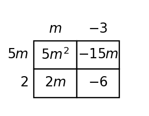

7.
Complete the missing areas in the model, then write one equivalent product for the total area.

Use these problems to recognize exponential growth and decay from tables, sequences, equations, and situations. Focus on identifying multiplicative structure and explaining how you know.
Complete the missing outputs by using the same multiplicative pattern in each table.
| Step | 0 | 1 | 2 | 3 | 4 |
|---|---|---|---|---|---|
| Pattern A | 5 | 15 | 45 | ||
| Pattern B | 96 | 48 | 24 |
Write the multiplier for each percent change.
Two students are sorting the same pattern.
For the sequence 40, 20, 10, 5, ..., identify the correct student and justify the choice.
Complete the table and describe the repeated percent change.
| Year | 0 | 1 | 2 | 3 | 4 | 5 |
|---|---|---|---|---|---|---|
| Ticket price | $\$50$ | $\$55$ | $\$60.50$ | $\$66.55$ |
Circle the greatest common factor in each expression, then write the remaining factor mentally.
Rewrite each sum as a product by factoring out the greatest common factor.
Complete the missing areas in the model, then write one equivalent product for the total area.
Factor each expression completely. Then multiply one answer back to verify it.
The expression $24t+18$ represents the total number of tiles in two repeated border designs. Write an equivalent product and explain what each factor could represent in the design.
A student factors $18x^2+27x$ as $3x(6x+9)$ and says the job is complete.
Critique the work. Identify what is correct, what is incomplete, and write the expression factored completely.
The expression $2x^2-7x+15$ and the area model are supposed to represent the same product. Find the mismatch, explain how you know, and revise the incorrect cell.

A student designed the area model shown to represent a product, but the model does not support the claimed expression $5m^2-12m-6$.
Revise either the expression or one part of the model so the representations match. Then write the matching product and sum.

Use the zero product property to solve each equation.
Write a factored equation with zeros $-4$ and $6$.
Solve or interpret the quadratic situation for Solving Quadratics by Factoring. Show the algebra that supports your answer.
Solve $x^2-7x-18=0$ by factoring.
Critique Error. Analyze the quadratic evidence for Solving Quadratics by Factoring. Write a conclusion and justify it with algebraic or graphical evidence.
Identify the error, correct the solution, and explain how the structure shows the mistake.
The outputs are 6, 18, 54, 162. Is the pattern arithmetic, exponential, or neither? State the multiplier or difference.
A value keeps 72% of its previous amount each step. Is this growth or decay? Write the multiplier.
Solve: $(x-4)(x+7)=0$.
Factor out the GCF: $12x^3-18x^2$.